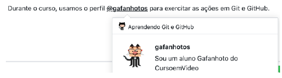
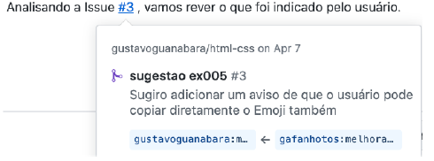

Formatações em Markdown
A linguagem Markdown exige que entre uma linha de código e outra, possua uma vazia.
Ex:
1| # Título
2|
3| Texto
2|
3| Texto
Resultado:
A linguagem Markdown exige que entre uma linha de código e outra, possua uma vazia.
Ex:
Resultado:
Para criar títulos, podemos usar de uma # até seis ###### para definir o nível do título para que o conteúdo fique organizado corretamente. Para criar linhas horizontais, podemos usar três traços --- ou três asteriscos ***
Resultado:
Para colocar uma palavra em itálico, podemos colocá-la entre asteriscos simples ou entre underlines simples
Resultado:
ExemploPara usar o negrito, basta colocar asteriscos duplos ou underlines duplos para delimitar o termo.
Resultado:
ExemploPara riscar um texto, coloque-o entre dois símbolos de til
Resultado:
É possível também juntar as formatações de forma hierárquica.
Resultado:
ExemploPara criar uma lista numerada, comece a linha com um número qualquer, seguido de um ponto. O primeiro número da lista vai indicar onde ela começa, os itens seguintes, se estiverem em linhas consecutivas, vão continuar a sequência.
Resultado:
Basta usar um asterisco seguido de um espaço ou um traço seguido de espaço no início de uma linha para que ele seja parte de uma lista demarcada.
Resultado:
Colocando um sinal - [ ] ou - [x] antes de cada item, criamos listas de tarefa com itens marcados ou desmarcados.
Resultado:
☐ pãoPara inserir uma imagem, vamos usar o símbolo  onde a descrição fica entre colchetes e o endereço da imagem entre parênteses.

Resultado:

Para inserir links, a simbologia é semelhante à usada com as imagens, apenas removemos o sinal de exclamação.
[Meu GitHub](https://github.com/jlbbarco)
Resultado:
Meu GitHubComo o GitHub é uma rede social para programadores, nada mais interessante do que aprendermos a demarcar nossos códigos e comandos. Podemos usar dois tipos de marcação:
Se for citar um comando apenas, basta colocá-lo entre crases.
Gostaria de mais informações sobre o comando `window.document.querySelector()`
Resultado:
Gostaria de mais informações sobre o comando
window.document.querySelector()Para compartilhar um código com mais linhas, basta colocar todas elas dentro de um grupo delimitado entre três crases consecutivas (sem espaço entre elas).
Olha só o programa que criei em **Python**
```
num = int(input('Digite um número: '))
if num % 2 == 0:
print(f'O valor {num} é PAR')
else:
print(f'O valor {num} é ÍMPAR')
print('Fim do Programa')
```
Resultado:
Olha só o programa que criei em Python:
num = (input('Digite um número: '))
if num% 2 == 0:
print(f'O valor {num} é PAR)
else:
print(f'O valor {num} é ÍMPAR)
print('Fim do Programa')
Quando criamos conteúdos em markdown para o GitHub, podemos relacionar conteúdos com outros ou com pessoas usando essas marcas.
Ao responder alguém, podemos realizar citações a outras mensagens completas ou a trechos dela, usando sinais de > no início da linha.
Resultado:
Como Steve Jobs disse uma vez:
Decidir o que não fazer é tão
importante quanto decidir
o que fazer
Bela frase!
Se você precisar mencionar algum usuário, pode indicar o nome do perfil logo após o símbolo de @.
Resultado:
Também podemos mencionar Issues e Pull Requests de nosso repositório usando o símbolo de # seguido do número do elemento (sem espaços).
Resultado:
Até o momento, vimos que temos vários símbolos que servem para criar formatações. Mas e se por acaso quisermos mostrar exatamente o símbolo sem seu efeito de formatação? A resposta é simples: usamos uma barra invertida antes do símbolo para eliminar o efeito de formatação.
Resultado:
Podemos criar títulos usando ## antes do textoExistem códigos especiais para emojis em markdown, que devem ser representados entre símbolos de ::
Resultado:
Boas iniciativas merecem aplausos 👏Criar tabelas em markdown é extremamente simples. Basta usar as barras em pé (pipes) | e as barras deitadas (traços) - de forma organizada.
Resultado:
| Ano | Curso | Professor | Aulas |
|---|---|---|---|
| 2013 | HTML+CSS+JS | Gustavo Guanabara | 36 |
| 2018 | Hardware | Alfredo Jr | 28 |
| 2019 | Linux | Ricardo Pinheiro | 15 |
Perceba que na segunda linha do exemplo, indicamos o alinhamento de cada coluna, seguindo os padrões a seguir:
--- Formatação padrão (alinhamento à esquerda)
:--- Alinhamento à esquerda
:---: Conteúdo Centralizado
---: Alinhamento à direita